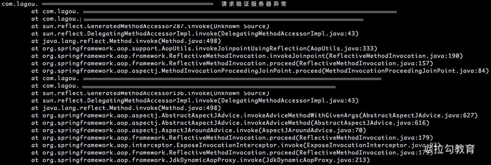
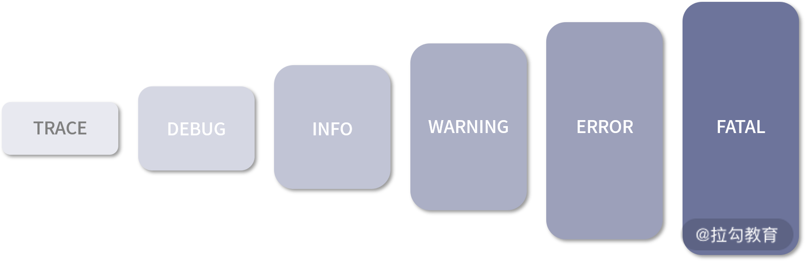
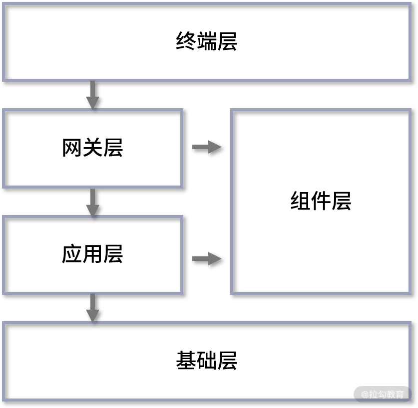

- 00 分布式链路追踪实战.md.html
- 01 数据观测：数据追踪的基石从哪里来？.md.html
- 02 系统日志：何以成为保障稳定性的关键？.md.html
- 03 日志编写：怎样才能编写“可观测”的系统日志？.md.html
- 04 统计指标：“五个九”对系统稳定的真正意义.md.html
- 05 监控指标：如何通过分析数据快速定位系统隐患？（上）.md.html
- 06 监控指标：如何通过分析数据快速定位系统隐患？（下）.md.html
- 07 指标编写：如何编写出更加了解系统的指标？.md.html
- 08 链路监控：为什么对于系统而言必不可少？.md.html
- 09 性能剖析：如何补足分布式追踪短板？.md.html
- 10 链路分析：除了观测链路，还能做什么？.md.html
- 11 黑白盒监控：系统功能与结构稳定的根基.md.html
- 12 系统告警：快速感知业务隐藏问题.md.html
- 13 告警质量：如何更好地创建告警规则和质量？.md.html
- 14 告警处理：怎样才能更好地解决问题？.md.html
- 15 日志收集：ELK 如何更高效地收集日志？.md.html
- 16 指标体系：Prometheus 如何更完美地显示指标体系？.md.html
- 17 链路追踪：Zipkin 如何进行分布式追踪？.md.html
- 18 观测分析：SkyWalking 如何把观测和分析结合起来？.md.html
- 19 云端观测：ARMS 如何进行云观测？.md.html
- 20 运维集成：内部的 OSS 系统如何与观测相结合？.md.html
- 21 结束语 未来的监控是什么样子？.md.html
02 系统日志：何以成为保障稳定性的关键？
上一课时我对数据的来源做了简单的讲解，在对可观测性的 3 个核心概念的介绍中，我首先提到的就是日志。我们知道，在应用程序、端上和传输系统中，日志无处不在。因此，这节课我将带你了解，日志为什么会是保障系统稳定性的关键。
日志功能
日志可以记录系统中硬件、软件和系统的信息，同时还可以观测系统中发生的事件。用户可以通过它来检查错误发生的原因。如下图：

一般来说，日志具有以下几个功能：
- 便于调试：开发人员在进行应用开发时，都会在测试或本地环境中调试。添加日志可以让你感知到它进入了某个函数，执行了某些行为，甚至进入了代码层级，记录代码判断后的行为。我们一般会将日志设置为调试级别，或者在上线前将它们统一删除。
- 快速定位问题：我们通常会依据自己对业务的理解，在程序中增加相应的日志记录。当程序出现问题时，我们会第一时间想到通过日志，查看当时用户进行了什么操作，有没有出现程序报错等，这也是定位问题原因的关键。有时我们在进行业务数据埋点时，也会使用日志来查看更详细的业务数据信息。
- 高度定制化：日志是结构化的。同时，我们又可以在代码的任意位置对日志进行编写。无论应用是在执行业务请求，还是在执行定时任务，只要是在程序可执行的代码位置都可以编写日志。
- 信息埋点：我刚才有提到，日志是高度定制化的，所以你可以将自己的业务信息以日志的形式保存起来，比如用户在 21：22 的时候进行了准备支付操作，在 21：23 进行了支付结束操作，这一行为就可以记录下来。
- 追踪数据变化：日志同样可以将数据实时地记录下来，它会比一些统计系统记录得更加详细，因为统计系统一般只会记录某个时间段的信息，而日志可以精确到某个时间点。通过读取这部分数据，我们可以更好地了解系统运行时的状态。
- 数据分析：基于对信息的埋点，我们可以将收集到的信息统一写入一个文件中。数据分析系统可以定期解析这些日志文件，从而得出每个用户的具体操作，比如大数据分析师可以利用这个分析用户行为，指引下一步的整体战略。
日志级别
日志级别，这是一个为人熟知的概念。尽管大家都了解它，但我还是发现很多开发人员在用法上存在一些问题。这里我会按照从低到高的顺序，介绍其中比较关键的 4 个日志等级，同时也会指出大家在用法上存在的问题并给出我的理解。

- debug：调试级别。在这个级别，通常会记录一些调试的内容，比如程序进入方法或函数时，其中的参数信息。debug 级别的日志会极大地影响 CPU 和磁盘 I/O 写入的性能，所以我们一般只会在测试或本机环境中使用。除了自己编写的日志，一些常见的第三方框架也会记录一些日志以方便对程序的调试。这种日志量，在生产环境中你很难抓到重点，会浪费大量的时间在日志检索，所以我并不建议在生产环境中使用。
- info：信息级别。这个应该是开发人员最常用的日志等级了。我们一般也是通过这个日志等级完成上面提到的功能，比如信息埋点、追踪数据变化、数据分析等。虽然大家都在使用，但我发现有些时候，开发同学经常会把 info 级别当作 debug 级别，输出了很多没必要的日志内容，导致线上环境产生了大量的垃圾和重复信息，很不便于日志检索。
- warning 与 error：许多人会使用 error 级别来记录 warning 级别的内容，这使得不太关键的信息也会在查看故障日志时被筛选出来，导致对故障原因产生误判，浪费大量的时间。这里我会带你区分这两个级别的日志。 a. warning：警告级别。这一级别经常用来记录一些虽然出现了错误，但是并不会真正对程序执行构成影响的内容。当你想要使用 error 级别，如果感觉这个错误并不会影响程序往后执行或业务逻辑不会产生错误，就可以使用 warning 级别。 b. error：错误级别。只有当整个接口、方法调用都产生了不可避免的问题，对业务的主流程造成影响时才会采用的日志级别。
日志常见来源
查询问题的原因时，如果实在找不到，你可以按照一定的顺序对日志逐一排查，说不定就找到原因了。找问题原因的过程其实是一个不断否定、不断排除的过程，排除了所有的不可能，剩下的就是真相。
所以，在这一课时的最后，我会介绍一些常见的日志的来源，以方便你在需要逐层检索的时候，有一个整体的概念。
与我们在 01 课时介绍监控数据的来源时一样，日志的来源也可以按照用户端到服务端来划分。如下图所示：

终端层
这里的终端层我指的是像网页、App、小程序这样的形式。在这一层的所有日志信息都不在我们的服务器端，而是在用户的电脑、手机中。所以我们想要收集的话，一般是通过打点的形式上传到后端服务，再记录下来。
终端层更偏向用户的真实操作行为和一些异常信息的记录，比如用户当前的网络环境、系统状态、手机型号等。通过观察这部分数据，我们可以看出是哪一类用户在操作时容易产生问题，这也更加方便后端和终端的研发人员定位问题。
网关层
网关层可以理解为请求被接收之后，最先经过的地方，就像水龙头流出的水会先经过过滤器。最常见的网关层是 Nginx、Kong，当然也有像我们在 Spring 中经常说的 Zuul 和 Spring Cloud Gateway。网关层的日志通常会产生如下 2 个日志文件：
- 访问日志：当服务请求到达网关层后，会生成一条日志，记录这个请求从开始接收到最终反向代理的整个流程信息，其中不仅包括请求中的基本信息，如请求 IP、请求 UA，还包含与下游服务相关的 IP 地址、响应时长信息等。同时，这个文件也支持高度定制化。以 Nginx 举例，在 Nginx 中有相当多的环境变量可供选择，这些变量基本覆盖了一个请求生命周期中绝大部分的数据信息。
- 错误日志：记录网关服务在执行过程中出现的问题。不过除非是使用了第三方框架，不然网关层一般不会出现问题。
应用层
应用层一般指的是我们业务程序代码的执行位置。我们一般将应用程序分为基于容器托管的应用程序和普通的应用程序。
- 基于容器托管的应用程序，比如 Java 开发人员使用最多，最熟悉的 Tomcat。这一类型的应用程序会有以下 2 个相对关键的日志文件： a. 容器启动日志：以 Tomcat 为例，容器的 logs 目录中经常会有“catalina.日期.log”，这部分日志就是 Tomcat 在启动时的日志，它通常会随着控制台日志一同被打印出来。有时候某些程序异常没有被记录，在这里会有显示。下次如果你发现程序启动时莫名挂掉、无法启动，但是在自己的应用程序日志中又找不到输出信息，不妨到这个日志里看看。 b. 请求访问日志：这个和我们刚才在网关层讲的类似，请求访问日志会记录与上游相关的访问时间、访问地址等信息，这里的日志信息和网关层的日志是一一对应的。
- 普通应用程序：其日志文件我们通常会通过框架编写，这里面的写法就相对多样和自由。
“如何更好地书写日志”我会在下个章节中讲解，这里我们先继续介绍日志的来源。
组件层
像我们经常使用的 MySQL 和 Redis 会产生日志，这些日志就属于组件层。我会列举应用中比较常见的日志来向大家说明这一层级的日志：
- 应用运行时产生的日志：一般第三方应用运行时，会输出一些程序执行时的日志内容。当业务程序与组件通信出问题了，我们可以尝试通过这个日志定位，看应用当时是否出现了某些数值的波动或是其他异常。
- 慢查询日志：在一般的数据库类型的应用中，都会有这种日志，用于记录业务系统在进行数据库查询时出现的“查询速度慢”这一现象。如果某个系统中突然出现了大量的“慢查询”，我们就需要监控这个问题，从而获取更加完整的数据库查询语句和来源信息，以便更好地解决问题。
- 审计日志：这个同样适用于数据库。审计日志的主要作用是在进行相关操作的时候，将相关的操作行为记录下来，比如一次数据库查询、一次数据插入。一般这样的数据日志输出量会比较大，对应用的性能有一定的损耗，所以大多数情况下并不会使用。但是像金融行业中有特殊审计场景的需求，审计日志就是必不可少的。
基础层
基础层中的日志就更偏向于运维。它的功能更倾向于日志审计、系统问题等，这里我列举一下比较常见的日志：
- 系统日志：一般指的是 Linux 平台中的“/var/log/messages”，这里会记录系统中比较关键的日志。当系统启动了某个程序，或某个程序因为内存过高引发了系统级别的 kill ，就会记录在这个文件中。
- 操作日志：通常 Linux 的日志会通过环境变量定制。通过这个日志，我们可以查询到哪个人在哪个时间点进行了哪些操作，也可以在系统出现异常问题时，查看是谁，因为什么操作而导致的。
以上，就是我对日志常见来源的介绍，相信通过对这些内容的讲解，你对日志一定有了更深入的了解。
结语
综上所述，日志具有全面性和完整性的特点，它存在于系统的任何地方，同时又事无巨细地记录下每一件细小的事情。学完这一课时，你了解为什么系统日志是保障系统稳定性的关键了吗？关于日志级别和日志来源，还有什么我没有讲到的是你想要分享的呢？欢迎在留言区分享你的见解。
在下面一小节，我会讲述如何将日志写得更具有可观测性，更加有利于线上问题的定位。